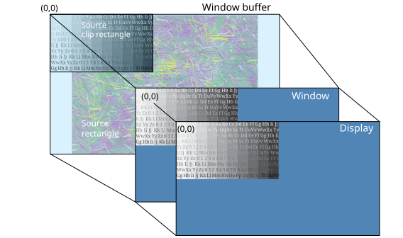

We recommend that you use a single, static window buffer (SCREEN_PROPERTY_STATIC) whenever possible,
and that you try to load the image directly into the window buffer.
When your application tries to show content from multiple, visible windows, Screen
likely needs to create a framebuffer. When Screen creates a framebuffer,
additional drivers may need to start as well, which can increase the time required to show content on the display.
For this reason, to get content shown quickly, we recommend that you minimize the number of visible windows you use in your
application.
Note: If your board supports more than one pipeline, you can use the pipelines to avoid the requirement to use a framebuffer to
do composition.
To improve the time it takes to show content on the display, avoid using these unnecessary operations on the splash screen
content when possible. The following operations require extra processing time and aren't usually required for a splash screen
application:
- rotation
- transparency
- scaling
Since the contents of the window buffer shouldn't change, set the window's property type to
SCREEN_PROPERTY_STATIC.
If you use clipped regions in the source rectangle of the window buffer, ensure that the source rectangle (or source view port)
is contained within the clipped region. Your clip region should be at least the same size so the source
rectangle can be contained within it. So avoid what's shown in the following illustration from occurring:
Figure 1. Avoid - Source rectangle isn't contained within the clipped region.

For more information about source clipped regions, see the
Using a source clip rectangle
section in the
Windowing
chapter of the
Screen Developer's Guide.